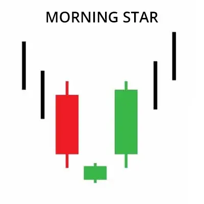
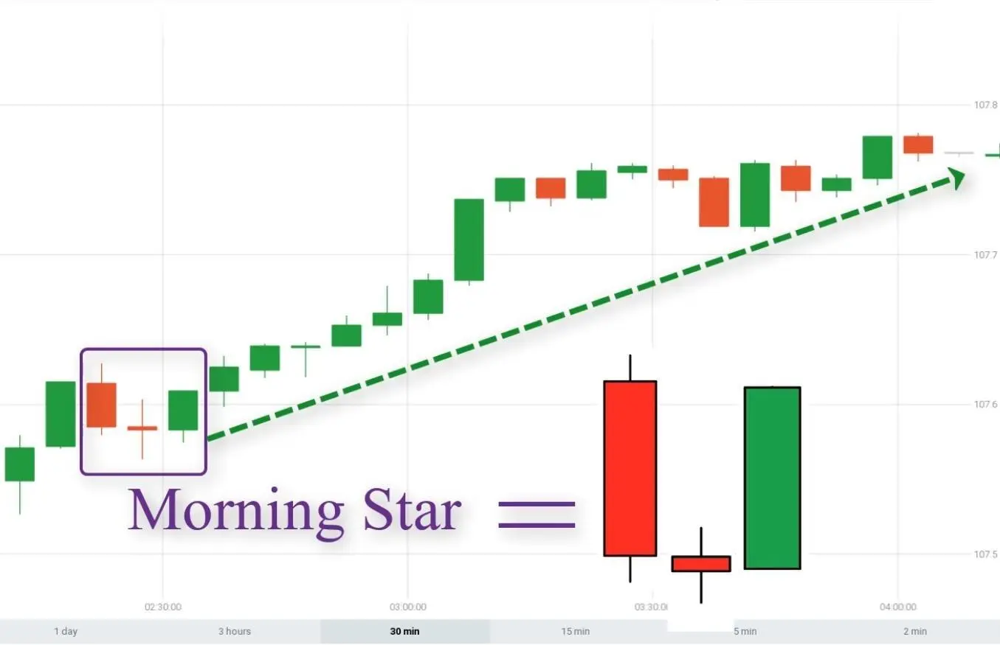

Das Morning Star-Muster ist ein Handelsmuster, das den Beginn eines Aufwärtstrends auf dem Aktienmarkt
nach einem Rückgang signalisiert. Dieses Muster wird mit drei Kerzenleuchter gebildet.
Der erste Kerzenleuchter ist ein langer abwärts gerichteter Kerzenleuchter, der zweite
Kerzenleuchter ist ein kurzer aufwärts gerichteter Kerzenleuchter und der dritte Kerzenleuchter
ist ein langer aufwärts gerichteter Kerzenleuchter.
Der erste Kerzenleuchter zeigt an, dass der Markt im Sinkflug ist. Der zweite Kerzenleuchter
weist darauf hin, dass der Verkaufsdruck auf dem Markt nachlässt. Der dritte Kerzenleuchter
signalisiert den Beginn eines Aufwärtstrends im Markt.
Das Morning Star-Muster bietet eine starke Indikation für einen Aufwärtstrend.
Bei Beobachtung dieses Musters könnte man möglicherweise mit einer Aufwärtspräferenz
auf dem Aktienmarkt handeln.
